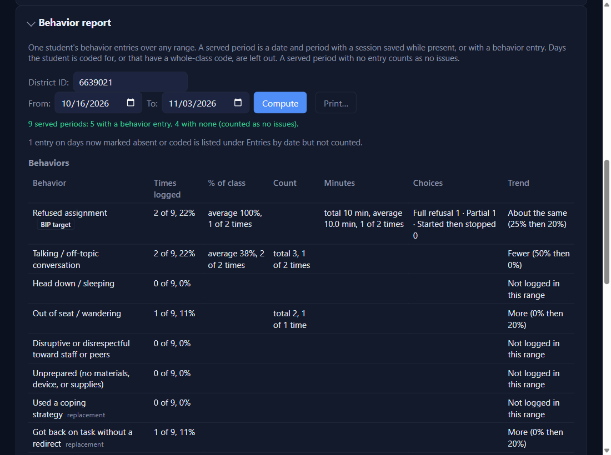
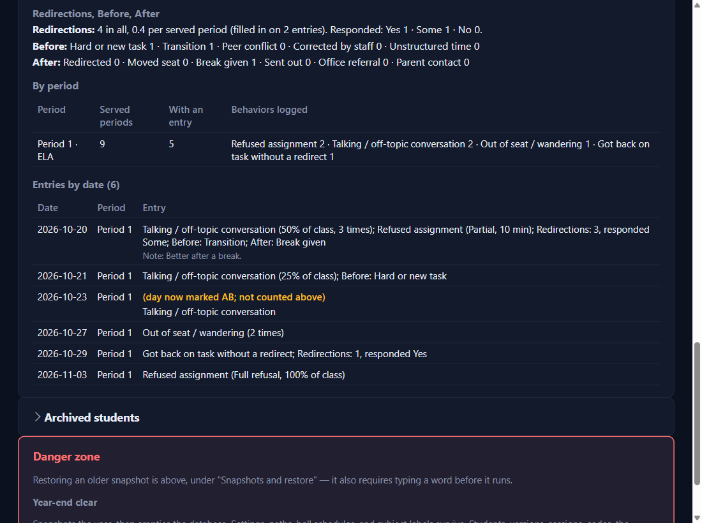

The Behavior report
Settings → Behavior report
Click in District ID and pick the student (or type the ID), choose From and To, then click Compute.

The top line: served periods
A served period is a date and period with the day saved while the student was present, or with a behavior entry. Absent and coded days, and whole-class code days, are left out. A served period with no entry counts as no issues, so you don't log quiet days: 9 served periods: 5 with a behavior entry, 4 with none (counted as no issues).
One row per behavior, with a trend
BIP targets come first. Times logged is out of the served periods (2 of 9, 22%). Then, for the times you filled them in: % of class (an average), Count, Minutes, and how often each Choice was tapped. A detail you never filled in stays blank.
Trend splits the range in half by date and compares the two shares: Fewer, More, or About the same (within 10 points), with both shares after it. For replacement behaviors (like Used a coping strategy), More is the good direction.
Redirections, By period, and every entry
Redirections gives the total, the average per served period, and how often the student responded. Before and After count each chip. By period shows each class separately, so you can see if something happens in only one room. Entries by date lists every entry with its notes; one on a day later marked absent says (day now marked AB; not counted above).

Print it, or save it as a PDF
Print… beside Compute works like the other reports: greyed until Compute shows a result, and again if you change the student or a date. Pick a printer, or Microsoft Print to PDF. The printout is headed Behavior report, student ID name, dates.
✓ You'll know it worked
- The top line's numbers add up: with an entry + with none = served periods.
- Come back to Settings after logging more and the report updates by itself.
✕ Avoid these
- Reading 0% as "never". It means never logged; quiet days count as no issues.
- A one-week range for the trend. Short ranges often say Not enough days to compare.
⚠ If you see this
Not logged in this rangeThe behavior is switched on but nothing was logged between those dates.